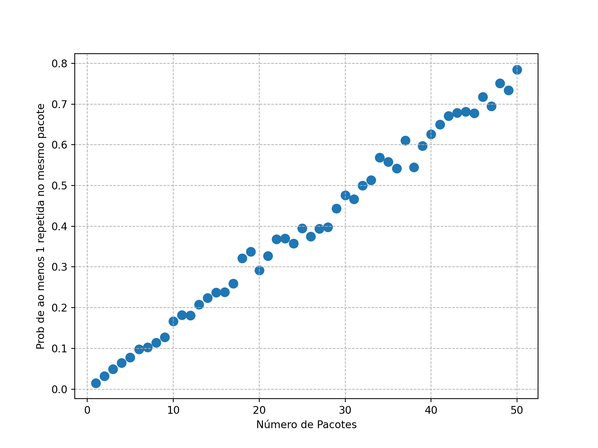

Mostrar código
n <- 100
u <- runif(n, min = 0, max = 1)
theta_hat <- mean(exp(-u))
valor_real <- 1 - exp(-1)
theta_hat[1] 0.6410597Mostrar código
valor_real[1] 0.6321206Os Métodos de Monte Carlo (MMC) são uma técnica poderosa que utiliza a simulação de valores aleatórios para calcular aproximações de valores esperados e integrais que não podem ser resolvidos analiticamente. Neste contexto, aprendemos a utilizar variáveis aleatórias simuladas para realizar o cálculo aproximado de integrais.
Seja \(X\) uma v.a. discreta com função de probabilidade \(p(x)\) ou uma v.a. contínua com função densidade \(f(x)\). O Método de Monte Carlo propõe um estimador para \[ \theta = \mathbb{E}[g(X)] = \begin{cases} \int_{-\infty}^{\infty} g(x) f(x) \, dx & \text{se $X$ é contínua} \\ \sum_x g(x) p(x) & \text{se $X$ é discreta} \end{cases} \]
Especificamente, ele funciona da seguinte forma. Seja \(X_1, \dots, X_n\) uma sequência de variáveis aleatórias i.i.d. com a mesma distribuição que \(X\). Então:
\[ \hat{\theta}_n = \frac{1}{n} \sum_{i=1}^n g(X_i) \]
é o estimador de Monte Carlo para \(\theta\).
Pseudo-Algoritmo para aproximar \(\theta\):
Porque Funciona?
O método de Monte Carlo funciona devido à Lei Forte dos Grandes Números, que garante que a média amostral convergirá quase certamente para a esperança verdadeira conforme o número de amostras tende ao infinito:
\[ \hat{\theta}_n = \frac{1}{n} \sum_{i=1}^n g(X_i) \longrightarrow \theta \text{ (quase certamente)} \]
Assim, quando \(n\) cresce, a estimativa de Monte Carlo converge para o verdadeiro valor de \(\theta\).
Importante: Frenquentemente \(n\) é denotado por \(B\) na literatura de Monte Carlo, de forma a não haver confusão com o tamanho de amostras não geradas no computador.
Queremos obter uma estimativa para
\[ \theta = \int\limits_{0}^{1}e^{-x} dx \]
Para isso, basta observar que se \(U \sim Unif(0,1)\), então \(\theta = \mathbb{E}[e^{-U}]\). De fato, se \(U \in Unif(0,1)\), \[ \theta=\int\limits_{0}^{1}e^{-x} dx= \int\limits_{0}^{1}e^{-u}f(u) du. \] Assim, o estimador desta integral via MMC pode ser obtido da seguinte forma:
Vamos verificar como o valor de \(n\) influencia na aproximação:
library(ggplot2)
set.seed(58)
N <- 1:2000
theta_hat <- numeric(length(N))
u <- numeric(length(N)) # Pré-alocação do vetor
# Preenchendo o vetor u e calculando theta_hat
for (i in seq_along(N)) {
u[i] <- runif(1)
theta_hat[i] <- mean(exp(-u[1:i]))
}
# Criando o dataframe para o ggplot
df <- data.frame(N = N, theta_hat = theta_hat)
# Plotar o gráfico usando ggplot2
ggplot(df, aes(x = N, y = theta_hat)) +
geom_line(color = "blue") +
geom_hline(yintercept = 1 - exp(-1), color = "red", linetype = "dashed") +
labs(x = "n", y = expression(hat(theta)[n]), title = expression(Aproximação~de~theta)) +
theme_minimal()import numpy as np
import matplotlib.pyplot as plt
np.random.seed(58)
N = np.arange(1, 2001, 1)
theta_hat = np.zeros(len(N))
u = np.array([])
for i in range(len(N)):
u = np.append(u, np.random.uniform(0, 1))
theta_hat[i] = np.mean(np.exp(-u))
plt.plot(N, theta_hat)
plt.axhline(y=1 - np.exp(-1), color='red', linestyle='--')
plt.xlabel('n')
plt.ylabel(r'$\hat{\theta}_n$')
plt.title(r'Aproximação de $\theta$')
plt.show()Esse gráfico mostra a evolução da estimativa à medida que o número de variáveis aleatórias \(n\) aumenta, comparando com o valor real da integral.
Seja \(X \sim Gama(2,3)\). Queremos aproximar o valor de \(\mathbb{P}(X \geq 0.4)\) usando o método de Monte Carlo. Note que \[\theta:= \mathbb{P}(X \geq 0.4) = \int g(x)f(x)dx,\] em que \(g(x)=I(x \geq 0.4)\) e \(f(x)\) é a densidade da Gama(2,3). Assim, podemos aproximar a probabilidade gerada via MC.
Neste caso, o algoritmo corresponde a gerar \(X_i \sim Gama(2,3)\), defir e definir uma variável indicadora \(Y_i\) que vale 1 quando \(X_i \geq 0.4\) e 0 caso contrário. A estimativa de Monte Carlo é dada pela média dos \(Y_i\)’s:
Neste exemplo, queremos aproximar o valor de \(\pi\) utilizando o método de Monte Carlo. A ideia é gerar pontos aleatórios em um quadrado e contar quantos caem dentro de um círculo inscrito no quadrado. Vamos seguir o raciocínio a partir da geometria básica.
A razão entre a área do círculo e a área do quadrado é dada por:
\[ \frac{\text{Área do círculo}}{\text{Área do quadrado}} = \frac{\pi}{4} \]
(-1.0, 1.0)(-1.0, 1.0)Para estimar \(\pi\) usando Monte Carlo, procedemos da seguinte forma:
Geramos pontos aleatórios \((x, y)\) no quadrado \([-1, 1] \times [-1, 1]\).
Verificamos se cada ponto está dentro do círculo, o que ocorre se \(x^2 + y^2 \leq 1\).
A fração de pontos que caem dentro do círculo aproxima a razão \(\frac{\pi}{4}\).
Multiplicamos essa fração por 4 para obter uma estimativa de \(\pi\).
Formalmente, se \((X,Y) \sim Unif(-1,1) \times Unif(-1,1)\) e \(g(x,y)=I(\text{(x,y) está no círculo})\), temos que \[\theta:=\int g(x,y)f(x,y) dxy = \frac{\text{Área do círculo}}{\text{Área do quadrado}} = \frac{\pi}{4} \] Assim, se \((X_i,Y_i)\) é um ponto gerado uniformemente dentro do quadrado, o estimador de Monte Carlo para \(\frac{\pi}{4}\) é dado por: \[ \hat{\theta}_n = \frac{1}{n} \sum_{i=1}^n g(x_i,y_i)= \frac{1}{n} \sum_{i=1}^n z_i, \] em que \(z_i = 1\) se o ponto \(i\) está dentro do círculo (i.e., se \(x_i^2 + y_i^2 \leq 1\)) e \(z_i = 0\) caso contrário.
Multiplicando por 4, obtemos a estimativa de \(\pi\):
\[ \hat{\pi}_n = 4 \cdot \hat{\theta}_n = 4 \cdot \frac{1}{n} \sum_{i=1}^n z_i \]
De acordo com a Lei Forte dos Grandes Números, sabemos que:
\[ \hat{\pi}_n \longrightarrow \pi \quad \text{(quase certamente, quando $n \to \infty$)}. \]
Ou seja, à medida que o número de pontos simulados \(n\) aumenta, a estimativa \(\hat{\pi}_n\) convergirá para o valor verdadeiro de \(\pi\).
Implementação
Os trechos de código fornecidos em R e Python simulam esse processo, gerando \(n\) pontos e calculando a aproximação de \(\pi\) com base nos pontos que caem dentro do círculo. Além disso, são gerados gráficos que mostram como a estimativa de \(\pi\) melhora conforme o número de simulações aumenta, evidenciando a convergência mencionada.
Agora que todos os detalhes matemáticos do exemplo estão claros, o código para simulação pode ser executado para observar a aproximação prática de \(\pi\).
set.seed(459)
library(ggplot2)
N <- 1:80000
z <- numeric(length(N))
# Loop para gerar os pontos e verificar se estão dentro do círculo
for (i in seq_along(N)) {
x <- 2 * runif(1) - 1
y <- 2 * runif(1) - 1
z[i] <- (x^2 + y^2 <= 1)
}
# Cálculo da estimativa de pi
theta_hat <- cumsum(z) / N
pi_hat <- theta_hat * 4
# Criando o dataframe para o ggplot
df <- data.frame(N = N, pi_hat = pi_hat)
# Plotar o gráfico usando ggplot2
ggplot(df, aes(x = N, y = pi_hat)) +
geom_line(color = "blue") +
geom_hline(yintercept = pi, color = "red", linetype = "dashed") +
labs(x = "n", y = expression(hat(pi)[n]), title = expression(Aproximacao~de~pi)) +
theme_minimal()import numpy as np
import matplotlib.pyplot as plt
np.random.seed(459)
N = np.arange(1, 80001, 1)
z = np.zeros(len(N))
for i in range(len(N)):
x = 2 * np.random.uniform(0, 1) - 1
y = 2 * np.random.uniform(0, 1) - 1
z[i] = (x**2 + y**2 <= 1)
theta_hat = np.cumsum(z) / N
pi_hat = theta_hat * 4
plt.plot(N, pi_hat)
plt.axhline(y=np.pi, color='red', linestyle='--')
plt.xlabel('n')
plt.ylabel(r'$\hat{\pi}_n$')
plt.title(r'Aproximação de $\pi$')
plt.show()Esse gráfico mostra como a estimativa de \(\pi\) melhora conforme o número de pontos simulados \(n\) aumenta.
O Método de Monte Carlo possibilita quantificar a incerteza em nossas estimativas. Para isso, podemos utilizar intervalos de confiança.
Suponha que temos uma sequência de amostras \(X_1, X_2, \dots, X_n\) de uma variável aleatória \(X\), e calculamos a média amostral \(\hat{\theta}_n = \frac{1}{n} \sum_{i=1}^n g(X_i)\). Pelo Teorema Central do Limite, sabemos que, para \(n\) suficientemente grande, a média amostral \(\hat{\theta}_n\) é aproximadamente normalmente distribuída:
\[ \hat{\theta}_n \sim N\left( \theta, \frac{\sigma^2}{n} \right) \]
onde \(\sigma^2 = \text{Var}[g(X)]\) é a variância de \(g(X)\). Essa aproximação permite a construção de um intervalo de confiança para \(\theta\).
O intervalo de confiança aproximado para \(\theta\) com nível de confiança \((1 - \alpha) \times 100\%\) é dado por:
\[ \hat{\theta}_n \pm z_{\alpha/2} \frac{\hat{\sigma}}{\sqrt{n}} \]
onde \(z_{\alpha/2}\) é o quantil da distribuição normal padrão associado à probabilidade \(\alpha/2\) e \(\hat{\sigma}\) é a estimativa da variância de \(g(X)\), obtida a partir das amostras.
Pseudo-Algoritmo para construir um intervalo de confiança:
Neste exemplo, construímos um intervalo de confiança para a estimativa de \(\pi\) usando o método de Monte Carlo, seguindo os passos acima.
set.seed(0)
N <- 10000 # número de amostras
z <- numeric(N)
# Loop para gerar os pontos e verificar se estão dentro do círculo
for (i in 1:N) {
x <- 2 * runif(1) - 1
y <- 2 * runif(1) - 1
z[i] <- (x^2 + y^2 <= 1)
}
theta_hat <- mean(z)
sigma_hat <- sqrt(var(z) / N)
alpha <- 0.05 # Nível de significância
z_alpha2 <- qnorm(1 - alpha / 2)
# Intervalo de confiança
IC <- c(theta_hat - z_alpha2 * sigma_hat, theta_hat + z_alpha2 * sigma_hat) * 4
theta_hat * 4 # Estimativa de pi[1] 3.1308[1] 3.098466 3.163134import numpy as np
from scipy.stats import norm
np.random.seed(0)
N = 10000 # número de amostras
z = np.zeros(N)
# Loop para gerar os pontos e verificar se estão dentro do círculo
for i in range(N):
x = 2 * np.random.uniform(0, 1) - 1
y = 2 * np.random.uniform(0, 1) - 1
z[i] = (x**2 + y**2 <= 1)
theta_hat = np.mean(z)
sigma_hat = np.sqrt(np.var(z) / N)
alpha = 0.05 # Nível de significância
z_alpha2 = norm.ppf(1 - alpha / 2)
# Intervalo de confiança
IC = (theta_hat - z_alpha2 * sigma_hat, theta_hat + z_alpha2 * sigma_hat)
IC = [i * 4 for i in IC]
theta_hat * 4 # Estimativa de pinp.float64(3.1228)[np.float64(3.090360848359833), np.float64(3.1552391516401666)]Neste caso, o intervalo de confiança construído em torno da estimativa \(\hat{\pi}_n\) oferece uma ideia de quão próxima nossa estimativa está do valor verdadeiro de \(\pi\), com uma certa confiança.
Um colecionador está juntando figurinhas para completar um álbum da Copa. Qual é a probabilidade de que, ao comprar \(n\) pacotes, pelo menos um deles contenha duas ou mais figurinhas iguais? Durante o curso de probabilidade, você aprenderá como calcular essa probabilidade. Outra abordagem possível é o uso do método de Monte Carlo. Nesse caso, simulamos a compra de \(n\) pacotes, cada um com 5 figurinhas, de um total de 640 figurinhas disponíveis no álbum. Repetimos essa simulação \(B=1000\) vezes e contamos quantas vezes ocorreu pelo menos uma repetição de figurinhas em algum dos pacotes. A proporção de simulações com repetições é a estimativa de Monte Carlo da probabilidade que estamos interessados em calcular.
nFigurinhas <- 640
B <- 1000
nPacotes <- 1:50
aoMenosUmaRepetidaNoMesmoPacote <- matrix(NA, length(nPacotes), B)
for(ii in 1:length(nPacotes)) {
for(jj in 1:B) {
figurinhas <- sample(1:nFigurinhas, nPacotes[ii] * 5, replace = TRUE)
figurinhas <- matrix(figurinhas, nPacotes[ii], 5)
aoMenosUmaRepetidaNoMesmoPacote[ii,jj] <- sum(apply(figurinhas, 1, function(xx) length(unique(xx)) != length(xx)) > 0)
}
}
probCoincidencia <- apply(aoMenosUmaRepetidaNoMesmoPacote, 1, mean)import numpy as np
import random
nFigurinhas = 640
B = 1000
nPacotes = np.arange(1, 51) # Intervalo de 1 a 50 (Python é exclusivo no final)
aoMenosUmaRepetidaNoMesmoPacote = np.empty((len(nPacotes), B))
for ii in range(len(nPacotes)):
for jj in range(B):
figurinhas = [random.choices(range(1, nFigurinhas + 1), k=5) for _ in range(nPacotes[ii])]
figurinhas = np.array(figurinhas)
aoMenosUmaRepetidaNoMesmoPacote[ii, jj] = np.sum([len(set(pacote)) != len(pacote) for pacote in figurinhas])
probCoincidencia = np.mean(aoMenosUmaRepetidaNoMesmoPacote, axis=1)Agora podemos visualizar os resultados obtidos por meio do gráfico a seguir:
dados <- data.frame(probCoincidencia = probCoincidencia, nPacotes = nPacotes)
library(ggplot2)
ggplot(dados, aes(x = nPacotes, y = probCoincidencia)) +
geom_point(aes(size = 1.1)) +
xlab("Número de Pacotes") +
ylab("Prob de ao menos 1 repetida no mesmo pacote") +
theme(legend.position = "none")+
theme_minimal()import pandas as pd
import matplotlib.pyplot as plt
# Criação do DataFrame
dados = pd.DataFrame({'nPacotes': nPacotes, 'probCoincidencia': probCoincidencia})
# Criação do gráfico
plt.figure(figsize=(8, 6))
plt.scatter(dados['nPacotes'], dados['probCoincidencia'], s=70) # 's' ajusta o tamanho dos pontos
plt.xlabel('Número de Pacotes')
plt.ylabel('Prob de ao menos 1 repetida no mesmo pacote')
plt.grid(True, which='both', linestyle='--', linewidth=0.7)
plt.gca().set_facecolor('white') # Para seguir o tema minimalista
plt.show()
Simulação para completar o álbum
Uma segunda pergunta que também podemos responder via simulação é: quantos pacotes necessitamos em média para completar o álbum? A solução estimada pode ser obtida com o código abaixo:
numeroPacotes <- rep(NA, B)
for(jj in 1:B) {
albumCompleto <- FALSE
nPacotes <- 0
figurinhas <- NULL
while(!albumCompleto) {
figurinhas <- c(figurinhas, sample(1:nFigurinhas, 5, replace = TRUE))
if(length(unique(figurinhas)) == nFigurinhas) {
albumCompleto <- TRUE
}
nPacotes <- nPacotes + 1
}
numeroPacotes[jj] <- nPacotes
}import numpy as np
import random
nFigurinhas = 640
B = 1000
numeroPacotes = np.empty(B)
for jj in range(B):
albumCompleto = False
nPacotes = 0
figurinhas = []
while not albumCompleto:
figurinhas.extend(random.choices(range(1, nFigurinhas + 1), k=5))
if len(set(figurinhas)) == nFigurinhas:
albumCompleto = True
nPacotes += 1
numeroPacotes[jj] = nPacotesO número médio de pacotes necessários para completar o álbum é:
Com essa simulação, também podemos estimar as seguintes probabilidades:
Probabilidade de precisar de mais de 800 pacotes: 69.3%Probabilidade de precisar de mais de 1000 pacotes: 23.2%Probabilidade de precisar de mais de 800 pacotes: 73.5%Probabilidade de precisar de mais de 1000 pacotes: 24.4%Exercício 1.
Utilize o método de Monte Carlo para aproximar a integral \[ I = \int_0^{10} \sin(x^2) \, dx \]
Forneça um intervalo de confiança para avaliar a precisão da estimativa.
Exercício 1.
Utilize o método de Monte Carlo para aproximar a integral \[ I = \int_1^{\infty} \frac{1}{x^3} \, dx \]
Forneça um intervalo de confiança para avaliar a precisão da estimativa.
Exercício 2.
Seja \(X \sim \text{Exp}(\lambda)\) com \(\lambda = 2\). Estime a esperança \(\mathbb{E}[X^2]\) utilizando o método de Monte Carlo. Forneça um intervalo de confiança para avaliar a precisão da estimativa. Compare com o valor real dessa quantidade.
Exercício 3.
Considere que \(X\) tem distribuição Normal(0,1) e \(Y\) tem distribuição Gamma(1,1). Estime \(P(X\times Y > 3)\). Forneça um intervalo de confiança para avaliar a precisão da estimativa.